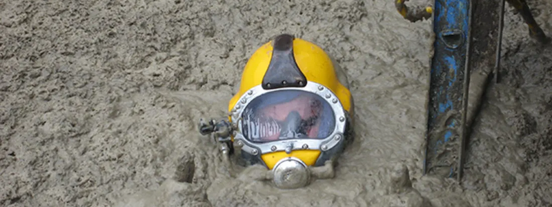

2021-02-01 08:00

Since being almost completely exiled from mainstream Social Media networks after his failed coup attempt, people are asking where Donald Trump has gone. Some Americans are actually experiencing withdrawal symptoms from the absence of Trump’s daily crack pipe.
Along with Trump, many of his unhinged supporters have been banned from Twitter, Facebook, and others. But this has just inflamed white grievance and their warped perception that white racists are the real victims. Conservatives have been treating the 25,000 National Guard troops at the Capitol as a sort of Tiananmen Square moment, and their exile from Facebook, Twitter, and YouTube has now become, for them, the American imposition of the Great Chinese Firewall. While these developments are no such thing, they are overreach and overkill, and Liberals proceed down the road of heavy-handedness at their own, great peril.
So where has the Far Right and all their sewage gone? To answer that question I did a little sewer diving, and here is what I found.
Donald Trump can now be found on Gab and Telegram, although he is rumored to be toying with the idea of creating his own social network — which, based on the history of Trump Water, Trump Steaks, and Trump University, may not end so well. Trump has established an Office of the Former President, which so far does not have a website but did announce its existence on Telegram.
Telegram, a messaging service with channels that users can subscribe to as easily as Twitter, has recently attracted a large number of Far Right voices. They include familiar names like Trump himself, former First Heirs Ivanka and Don Jr., Steve Bannon, Dinesh D’Souza, Sheriff David Clarke, Michelle Malkin, Laura Loomer, Ben Shapiro, Rush Limbaugh, Dan Bongino, Charlie Kirk, Breitbart News, Project Veritas, Turning Point USA, The Daily Wire, The Blaze, Right Side Broadcasting, Epoch Times, the Bannon War Room, One America News, Sean Hannity, Jeanine Pirro, Rudy Giuliani, Jack Prosobiec, Scott Presler, Sarah Huckabee Sanders, Kayleigh McEnany, Andy Biggs, Marjorie Taylor Greene, Paul Gosar, Lauren Boebert, Ted Cruz, Devin Nunes, Lindsey Graham, Jim Jordan, and others.
American Conservatives frequently supplement an unhealthy, unholy diet with intravenous vitamin drips from QAnon’s Q-Tip, the Boogaloo Boys Intel Drop, the Daily Groyper, and other white supremacist groups. These supplements are entirely unncessary because American Conservatives have been getting far more than their minimum daily requirements of fascism, nazism, anti-semitism, Islamophobia, and white supremacy for many years. And the content, it is important to note, is not all that different from the more “mainstream” Conservative views.
Other “victims” of internet moderation have moved to Parler, though it has been unable (or at least slow) to reload its Amazon cloud data to a new site. While inspired by mainstream Republicans, the January 6th coup was coordinated via social networking by extremists, and Parler was instrumental in the effort. With YouTube cracking down on hate speech, Rumble has become the go-to site for uploading videos filled with hate speech and conspiracies.
Since the pandemic, Liberals have been calling for more “moderation” (if not outright censorship) of crackpots spreading dangerous information. For their part, “mainstream” Republicans have been getting nuttier and more extreme. A new report from the Southern Poverty Law Center reports that the “Capitol Insurrection Shows How Trends On The Far-Right’s Fringe Have Become Mainstream.” This belated revelation has frightened even the GOP. Today RNC Chairwoman Ronna Romney McDaniel distanced herself from election conspiracies Rudy Guilani delivered from RNC offices, wondering “what is the liability of the RNC, if [Giuliani’s] allegations are made and unfounded?” It will be interesting to see if the “moderate” wing of the Republican Party will join Democrats in calling for forms of internet censorship.
Yesterday the New York Times published an article called The Coup We Are Not Talking About by Shoshana Zuboff, author of The Age of Surveillance Capitalism. Zuboff, to her credit, faults surveillance capitalism for monetizing data that ought to be protected from “data mining” by internet services like Google or Palantir. She also faults surveillance capitalism for selling or patriotically donating that data to America’s vast security state. Zuboff is in favor of anti-trust actions to break up large, dangerous monopolies. And Zuboff is also a strong proponent of privacy legislation to protect citizens from facial recognition and other forms of exploitation of personal data.
But Zuboff is also in favor of measures that go well beyond regulation into governmental intrusions into the proprietary algorithms that search engines use, “comprehensive audits” (whatever that means), and most frightening of all — copying European laws like the British Online Harms Bill, which make companies responsible for “public harms.”
The American Security Establishment (NSA, CIA, FBI, DOJ, DHS, etc.) has long demanded weakened encryption protocols in order to “protect Americans from harm” by snooping on everything transmitted over the internet. But, of course, one person’s “harm” is another’s freedom. If Wikileaks offers a roadmap for what’s coming, censorship and persecution based on “public harm” will soon extend to more whistleblowers the government doesn’t like and those espousing unpopular sentiments, such as defunding police, burning flags, or socializing Medicine.
This is the slippery slope that Zuboff — and many Liberals — want to descend.
At the heart of the “censorship” (or “moderation”) debate is compromise language inserted into the 1996 Communications Decency Act. One section, 47 U.S. Code § 230 — “Protection for private blocking and screening of offensive material” — does two main things: (1) it holds internet providers harmless from prosecution for inflammatory or libelous posts by their customers; and (2) it also holds internet providers harmless from lawsuits by their customers if they attempt to block or censor inflammatory or libelous content posted on their platforms.
Liberals and Conservatives both hate Section 230 — for different reasons. Liberals don’t want to hear hate speech and they don’t care much about the Civil Liberties implications of censorship. Conservatives don’t mind hate speech, or they routinely traffic in it, and they too don’t really care about the Civil Liberties implications.
Former president Donald Trump wanted to repeal Section 230, going so far as to threaten to veto the National Defense Authorization act if 230 were not revoked. And our new president is on the same side of the issue. When asked one year ago by the New York Times what he thinks of Section 230, candidate Joe Biden betrayed his ignorance of the law, saying, “[The Times] can’t write something you know to be false and be exempt from being sued. But [Facebook CEO Mark Zuckerberg] can. […] And [Section 230] should be revoked. It should be revoked because [Facebook] is not merely an internet company. It is propagating falsehoods they know to be false, and we should be setting standards not unlike the Europeans are doing relative to privacy.”
Trump’s and Biden’s views are shared by a large bipartisan crowd from Nancy Pelosi to Josh Hawley, and by Centrist Democrats and even a few progressives.
But as Ars Technica internet policy reporter Timothy B. Lee explains, “Biden is wrong to suggest that Section 230 treats Facebook differently from The New York Times. If someone posts a defamatory comment in the comment section of a Times article, the company enjoys exactly the same legal immunity that Facebook gets for user posts. Conversely, if Facebook published a defamatory article written by an employee, it would be just as liable as the Times.”
Those who want to impose more censorship (“moderation”) forget that if legislators can constrain internet freedom of speech, then constraints on print and broadcast media could easily be next.
In September 2020 former Attorney General William Barr weighed in on revoking and/or revising Section 230. One of Barr’s rationales was to permit more federal “oversight” of internet content and to give prosecutors greater latitude to prosecute indecency, terrorism, cyber-stalking, and “illicit content.” Barr also wanted backdoors into social networks and encryption keys the government could use to snoop on internet traffic.
But Barr also wanted changes that held online publishers like Twitter and Facebook to their own Acceptable Use policies — not arbitrary, capricious decisions to permit one user to abuse published policies while banning another:
“Section 230 […] should not hinder free speech by making platforms completely unaccountable for moderation decisions. A platform that chooses not to host certain types of content would not be required to do so, but it must act in good faith and abide by its own terms of service and public representations. Platforms that fail to do those things should not enjoy the benefits of Section 230 immunity. [My] proposal adds a provision§ 230(c)(l)(C) to make clear that online platforms can continue to take down content in good faith and consistent with their terms of service without automatically becoming a publisher or speaker of all other content on their service.”
As much as I revile William Barr, this last suggestion made more sense than convoluted and antidemocratic proposals to enforce “good citizenship” and “prevent harm” through what can only in the end be called by its proper name: censorship.
Legal remedies for willfully spreading lies, slandering or threatening people, or cyber-stalking already exist. Dominion Voting Machines had the right idea when it slapped Rudy Giuliani with a $1.3 billion lawsuit. And guess what? Fears of further liability from Giulani’s lying seem to have gotten Ronna McDaniel’s attention, too.
Ultimately it is up to laws to correct these injustices and to prosecutors to go after internet crime. But if the FBI can only muster the half-hearted prosecution of white supremacist coup plotters, and no one ever attempts to stop the steady stream of interstate phone scams ringing our phones at dinnertime, you can bet that new laws will also be enforced selectively, or not at all.
Liberals believe that the toxicity of the internet is responsible for the January 6th coup attempt. It seems to escape their notice that it was rallying calls by the former president, aided and abetted by numerous speakers and Far Right organizations who showed up on Pennsylviania Avenue on January 6th to urge a mob to lay siege to the Capitol. It was Republican legislators who conducted prohibited tours of the Capitol, informing the plotters where Democratic offices were located, where the safe rooms and tunnels could be found, and about the emergency signals in Congressional offices.
It was Trump’s Acting defense Secretary Christopher Miller who issued “stand down” orders to the National Guard, and the Metro Police. It was Miller who barred the use of weapons, air support, surveillance, who limited National Guard troops to 340 people, who basically de-fanged the police against a violent insurrectionist mob. If we really want to look at how the coup attempt could have been prevented, don’t look at censoring social media — which merely echoed the false claims of Trump and his Congressional co-conspirators — but to those who called the mob to “stand by” and then on the day of the siege urged them to go to war.
Once again, existing law is quite capable of holding plotters and seditionists responsible. But enforcement of existing law is always a matter of political will.
Finally, no matter the medium, there has always been a steady stream of crazy, racist sewage Americans consume, and it will continue to be produced even if its authors must resort to using mimeograph machines again. If we pursue the recommendations of people like Ms. Zuboff, William Barr, Donald Trump, and Joe Biden to attack social networks instead of pursuing prosecutions, we will punish the public instead of coup plotters. And we will still have failed to fix the white supremacy at the heart of the coup attempt — while irrevocably destroying what’s left of our democracy.